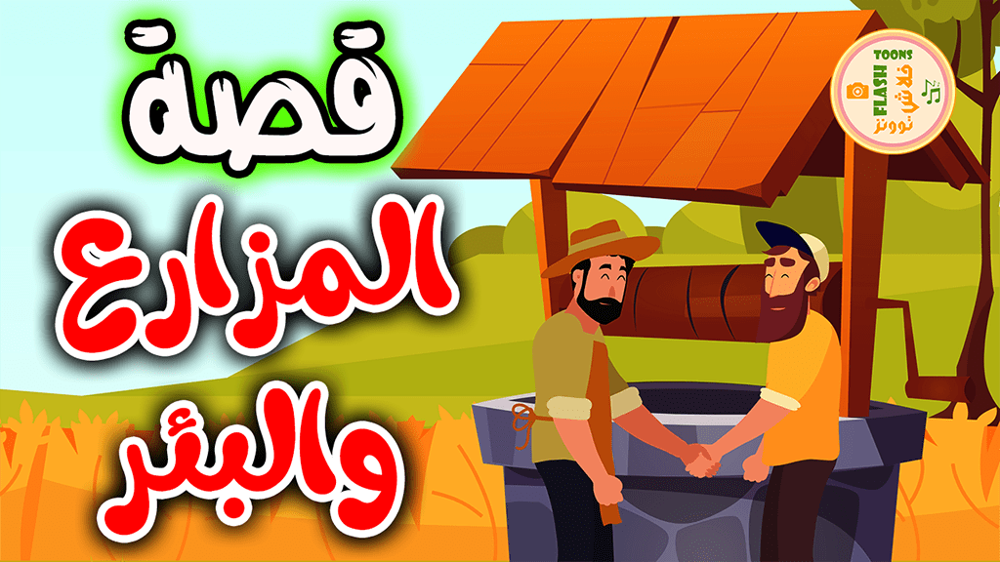

أهلا ومرحباً بكم متابعينا الكرام متابعي صفحة قصص اطفال قصة اليوم بعنوان قصة المزارع و البئر
قصة جميلة وتثير انتباه الاطفال ونهايتها رائعة
ولمتابعة المزيد من قصص اطفال جديدة و قصص اطفال مكتوبة يمكنكم زيارة صفحة قصص اطفال قبل النوم

اشترى مزارع مزرعة جديدة
وأخذ يبحث عن مصدر مياه لمزرعته فاشترى بئراً من جاره
لكن الجار كان ماكرًا ففي اليوم التالي رفض السماح للمزارع بأخذ المياه من البئر.
وعند سؤاله عن السبب أجاب: “ لقد بعتك البئر ولم أبعك الماء الذي به ” ثم ابتعد.
لم يعرف المزارع المذهول ماذا يفعل. لذلك ذهب إلى القاضي لكي يجد له حلا في مشكلته حيث أنه كان رجلا حكيما وذكيا.
وعلى الفور أرسل القاضي للجار الذي باعه البئر. وعندما حضر سأله “لماذا لم تسمح للرجل للمزارع بسحب المياه من البئر”.
قال الجار الماكر الشيء نفسه مرة أخرى لقد بعته البئر وليس الماء. لذلك لا يمكنه أخذ المياه
أجاب القاضي لا بأس. بما أنك قد اعترفت ببيعك البئر للمزراع، فلا داعي لك في حفظ الماء في بئر ليس ملكك
قم بإزالة الماء أو استخدامه بالكامل على الفور. وإلا دفعناك أجرة استخدامك لبئر ليست لك
عندها تعلم الرجل الماكر الدرس وأيقن أنه قد يوقع نفسه في مأزق فاعتذر للمزارع و تعهد بترك البئر له
« قَالَ رَسُولُ اللَّهِ صَلَّى اللَّهُ عَلَيْهِ وَسَلَّمَ : « مَنْ غَشَّنَا فَلَيْسَ مِنَّا، وَالْمَكْرُ وَالْخِدَاعُ فِي النَّارِ
"و قال تعالى: " يَا أَيُّهَا الَّذِينَ آمَنُوا لَا تَأْكُلُوا أَمْوَالَكُمْ بَيْنَكُمْ بِالْبَاطِلِ إِلَّا أَنْ تَكُونَ تِجَارَةً عَنْ تَرَاضٍ مِنْكُمْ
انتهت القصة
دمتم بحفظ الله
للحصول على مجموعة من قصص اطفال جديدة و قصص قبل النوم التي تحُث على الأخلاق الحسنة
……………………………………..
انتهت القصة
دمتم بحفظ الله
[لقراءة قصص مصورة]
للحصول على مجموعة من قصص اطفال جديدة و قصص قبل النوم التي تحُث على الأخلاق الحسنة
يمكنكم تحميل تطبيق قصص الاطفال من متجر جوجل بلاي
لقراءة المزيد من قصص اطفال قبل النوم يمكنكم التوجه الى صفحة قصص أطفال و حكايات قبل النوم يبة